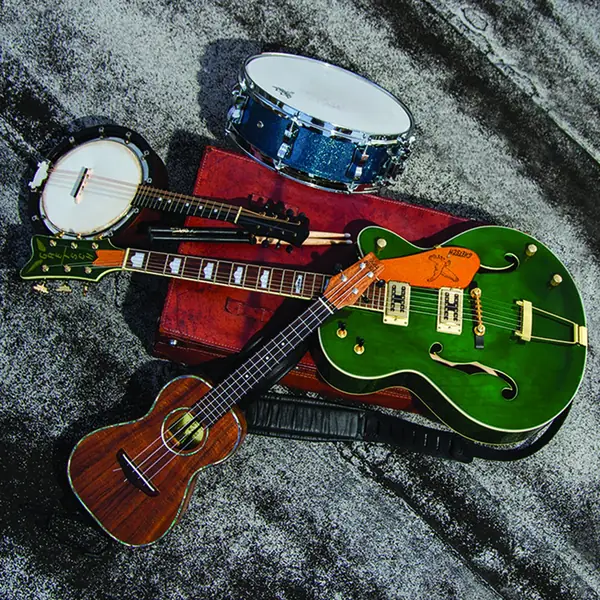

About
We're musicians too
Bridge Recording started out of necessity. Quality recording for musicians was too expensive, too hard to get to, or both. Inspired by mobile recording studios like Ronnie Lane's, we decided to go for it. With our mobile studio we've helped promising musicians reach the next level with studio-quality music.
We're musicians too. We understand what it means to be on both sides of the microphone, so we know how to manage energy and make the most of the golden moments that happen naturally, the ones that can get lost in a sterile, traditional studio.
We're a label, too. Our own projects, GLASS CANONS, StormJarl and Kilynn Ross, release their music on Bridge Recording, right alongside the artists we record, mix and master for.
We volunteer. In our spare time we narrate books for everyone, especially people with physical challenges. Take a look at the great work of the community at LibriVox.org.
All of us have challenges. Together, we all gain by helping one another. Find your purpose.
Thanks for considering us for your project and for taking the time to get to know us. We're based in Zoe, Oklahoma.

Your music, finished right
Got songs that deserve to be heard?
Tell us about your project. We'll listen, ask a few questions, and help you find the right next step.